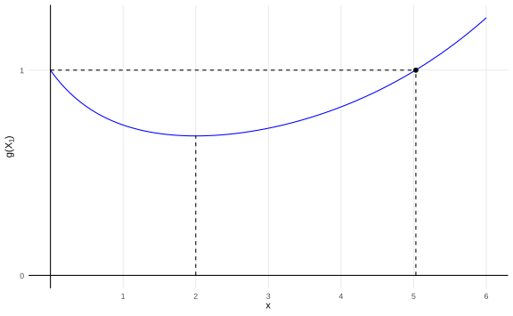
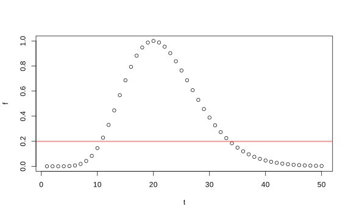
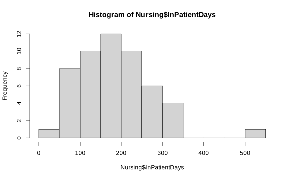

Capítulo 11 Pruebas con hipótesis simples
11.1 Hipótesis simples
Ejemplo. Sea \(X_1,\dots, X_n\) el tiempo de servicio del cliente #i en el sistema. El administrador del sistema no sabe si la distribución con que se atienden a los clientes es
\[f_1(x) = \begin{cases}\dfrac{2(n!)}{(2+\sum X_i)^{n+1}} & X_i>0\\0 & \text{si no}\end{cases}\]
O si es una \(\text{Exp}(1/2)\).
\[f_0(x)=\begin{cases}\dfrac 1{2^n}e^{-\frac12\sum X_i} & \text{si }X_i>0\\0 & \text{si no} \end{cases}\]
Si \(H_0: f=f_0\) vs \(H_1:f=f_1\), ¿Cuál hipótesis es cierta?
n <- 1
x <- seq(0, 10, length.out = 1000)
f1 <- 2 / (2 + x)^2
f0 <- 1 / 2 * exp(-1 / 2 * x)
df <- data.frame(x = c(x, x), f = c(f0, f1), `Distribución` = c(rep("f_0", 1000), rep("f_1", 1000)))
ggplot(df, aes(x, f, color = `Distribución`)) +
geom_line() +
theme_minimal()
Podemos redefinir las hipótesis si \(\Omega=\{\theta_0,\theta_1\}\) donde si \(\theta = \theta_i\), seleccionamos \(f = f_i\) y se prueba \(H_0: \theta=\theta_0\) vs \(H_1:\theta=\theta_1\).
Asuma que \(X_1,\dots,X_n\sim f_i(X)\) donde se pueden tener dos posibilidades \((i=0,1)\). Sea \(\Omega =\{\theta_0,\theta_1\}\) donde \(\theta_1\) es el parámetro que indica a cuál densidad se selecciona como hipótesis.
\[H_0: \theta=\theta_0 \text{ vs } H_1:\theta=\theta_1\]
Si \(\delta\) es un procedimiento de prueba, se denota los errores tipo I y II:
\(\alpha(\delta) = \mathbb P[\text{Rechazo }H_0|\theta=\theta_0 ]\).
\(\beta(\delta) = \mathbb P[\text{No rechazo }H_0|\theta=\theta_1 ]\).
Del ejemplo anterior, si se asume (o se comprueba) que \(f_1\) da probabilidades más altas que \(f_0\) entonces un criterio de rechazo puede ser \(X_1>4\) si se observa solo \(n=1\).
En este caso,
\[\alpha(\delta) = \mathbb P[X_1>4|\theta=\theta_0] = 1-(1-e^{-0.5\cdot 4}) = 0.135\]
## [1] 0.1353353\[\beta(\delta) = \mathbb P[X_1<4|\theta=\theta_1] = \int_{0}^{4}\dfrac2{(2+x_1)^2}dx_1=0.667.\]
Observación: Para densidades no usuales, hay dos formas de calcular los valores
Teóricamente calculando la integral directamente.
Si la integral es muy díficil y solo se necesita una aproximación númerica se puede usar
integrate:## 0.6666667 with absolute error < 2.9e-12
Nota: Esta distribución se debe estimar teóricamente ya que no hay fórmula
predefinida en R.
Objetivo. Encontrar un procedimiento de prueba \(\delta\) tal que \(\alpha(\delta)\) y \(\beta(\delta)\) se reduzcan simultáneamente o al menos si \(a,b>0\), que \(a\alpha(\delta) + b\beta(\delta)\) sea mínimo.
Teorema. Sea \(\delta^*\) un procedimiento de prueba tal que no se rechaza \(H_0:\theta=\theta_0\) si \(af_0(x) > bf_1(x)\) y se rechaza \(H_0\) si \(af_0(x) < bf_1(x)\). Si \(af_0(x) = bf_1(x)\) se puede rechazar o no \(H_0\). Entonces para cualquier otro procedimiento de prueba \(\delta\) \[a\alpha(\delta^*) + b\beta(\delta^*) \leq a\alpha(\delta) + b\beta(\delta). \]
Prueba. Caso discreto solamente.
Sea \(S_1\) región crítica de \(\delta\) (procedimiento arbitrario).
\[\begin{align*} a\alpha(\delta) + b\beta(\delta) & = a\sum_{x\in S_1}f_0(x) + b\sum_{x\in S_1^c}f_1(x) \\ & = a\sum_{x\in S_1}f_0(x) + b\bigg[1-\sum_{x\in S_1}f_1(x)\bigg]\\ & = b + \sum_{x\in S_1}(af_0-bf_1(x)) \end{align*}\]
y lo anterior es mínimo si \(af_0(x)-bf_1(x)<0\) en toda la muestra y no hay punto en donde \(af_0(x)-bf_1(x)>0\). \(\qedsymbol\)
Definición. Define el Cociente de verosimilitud como: \[\dfrac{f_1(x)}{f_0(x)}.\]
Note que el estadístico del cociente de verosimilitud (LR) está relacionado con el anterior de la siguiente forma:
\[\Lambda(x) = \dfrac{f_0(x)}{\max\{f_0(x),f_1(x)\}} = \dfrac{\sup_{\Omega_0}f(x|\theta)}{\sup_{\Omega}f(x|\theta)}.\]
Corolario. Bajo las condiciones del teorema anterior, si \(a,b>0\) entonces la prueba \(\delta\) para la cual \(a\alpha(\delta) + b\beta(\delta)\) es un mínimo rechaza \(H_0\) si el cociente de verosimilitud es mayor a \(\dfrac ab\).
Ejemplo: Continuando con el ejemplo del servicio al cliente.
En lugar de rechazar \(H_0: \theta = \theta_0\) si \(X_1>4\) hay que encontrar \(a\) y \(b\) que puedan balancear ambos tipos de errores.
Supogamos que tomamos \(a=b\), entonces basado en el colorario anterior rechace \(H_0\) si
\[\dfrac{f_1(x)}{f_0(x)}>1\Leftrightarrow \dfrac 4{(2+X_1)^2}\exp\left(\dfrac{X_1}2\right)>1\quad(*)\]
Entonces \((*)\) es cierto si \(X_1>c\). Se puede comprobar numéricamente que \(c\approx5.03\).
Por lo tanto, rechazamos \(H_0\) si \(X_1>5.03\).
En este caso \(\alpha(\delta^*)\) es igual a
## [1] 0.08086291y \(\beta(\delta^*)\)
## 0.715505 with absolute error < 1.3e-1011.2 Criterio de Neyman-Pearson
Encontrar un procedimiento \(\delta\) tal que
\(\alpha(\delta) \leq \alpha_0\) (\(\alpha_0\): nivel de significancia).
\(\beta(\delta)\) es mínimo.
Lema de Neyman-Pearson. Suponga que \(\delta'\) es un procedimiento de prueba que no rechaza \(H_0\) si \(f_1(x)<kf_0(x)\) rechaza \(H_0\). Si \(f_1(x)>kf_0(x)\) y decide cualquiera de los dos si \(f_1(x)=kf_0(x)\) para \(k>0\). Si \(\delta\) es otro procedimiento de prueba tal que \(\alpha(\delta)\leq \alpha(\delta')\), entonces \(\beta(\delta)\geq \beta(\delta')\). Si \(\alpha(\delta) <\alpha(\delta')\), \(\beta(\delta)> \beta(\delta')\).
Prueba. Tome \(a=k\) y \(b=1\) en el corolario y teoremas anteriores. Como \[k\alpha(\delta')+\beta(\delta')\leq k\alpha(\delta')+\beta(\delta'),\] entonces \[\alpha(\delta)\leq \alpha(\delta')\implies \beta(\delta')\geq \beta(\delta').\]
Consecuencia. Si queremos encontrar una prueba \(\delta'\) que satisfaga el criterio de Neyman-Pearson, debemos encontrar \(k\) tal que \(\alpha(\delta') = \alpha_0\), y se rechace \(H_0\) si \(f_1(x)>kf_0(x) \Leftrightarrow\dfrac{f_0(x)}{f_1(x)}<k^{-1}\).
Ejemplo. Suponga que \(X_1,\dots,X_n\sim N(\theta,1)\) y se quiere probar \(H_0: \theta = 0\) vs \(H_1: \theta = 1\) usando una prueba según el criterio de Neyman-Pearson con \(\alpha = 0.05\).
Note que
- \(f_0(x) = (2\pi)^{-n/2}\exp\bigg[-\dfrac 12 \sum_{i=1}^{n} X_i^2\bigg]\).
- \(f_1(x) = (2\pi)^{-n/2}\exp\bigg[-\dfrac 12 \sum_{i=1}^{n} (X_i-1)^2\bigg]\).
Entonces
\[\begin{align*} \dfrac{f_1(x)}{f_0(x)} &= \exp\bigg[-\dfrac 12 \sum_{i=1}^{n} (X_i^2-2X_i+1-X_1^2)\bigg]\\ &= \exp\bigg[n\bar X_n - \dfrac n2\bigg] \\ &= \exp\bigg[n\left(\bar X_n - \dfrac 12\right)\bigg] \end{align*}\]
Rechazamos \(H_0\) si
\[\dfrac{f*1(x)}{f_0(x)} = \exp\bigg[n\left(\bar X_n - \dfrac 12\right)\bigg]>k \Leftrightarrow \bar X_n > \underbrace{\dfrac 12 + \dfrac{\ln k}{n}}*{k'} .\]
Entonces buscamos \(k'\) tal que \[\mathbb P[\bar X_n>k'|\theta = 0]=0.05 \Leftrightarrow\mathbb P\bigg[\dfrac{\bar X_n}{1/\sqrt n}>\dfrac{k'}{1/\sqrt n}\bigg|\theta = 0\bigg]=0.05\] Despejando, \[k'\sqrt n= z_{0.95} \implies k'=\dfrac{z_{0.95}}{\sqrt n}.\]
Entonces, entre todas las pruebas en donde \(\alpha(\delta)\leq 0.05\), la que tiene el error tipo II más pequeño es la que rechaza \(H_0\) si
\[\bar X_n > \dfrac{z_{0.95}}{\sqrt n} = \dfrac{1.645}{\sqrt n}.\]
El error tipo II de esta prueba sería \[\begin{align*} \beta(\delta') = \mathbb P[\bar X_n<1.645n^{-1/2}|\theta = 1]\\ & = \mathbb P\bigg[Z < \dfrac{1.645n^{-1/2}-1}{n^{-1/2}}\bigg] = \Phi(1.645-n^{1/2}) \end{align*}\]
Si \(n=9\), por ejemplo, \(\beta(\delta') = \Phi(1.645-3) =0.0877.\)
Ejemplo. \(X_1,\dots,X_n\sim\text{Ber}(p)\) y considere las hipótesis \[H_0: p = 0.2 \text{ vs } H_1: p = 0.4.\]
Queremos encontrar un procedimiento de prueba en donde \(\alpha(\delta) = 0.05\) y \(\beta(\delta)\) es mínimo. Sea \(y = \sum_{i=1}^{n} X_i\).
\[f_0(x) = 0.2^y0.8^{n-y}\] \[f_1(x) = 0.4^y0.6^{n-y}\]
Entonces el cociente de verosimilitud es
\[\dfrac{f_1(x)}{f_0(x)}=\left(\dfrac 34\right)^n\left(\dfrac 83\right)^y\]
y se rechaza \(H_0\) si
\[\begin{align*} \dfrac{f_1(x)}{f_0(x)}>k & \Leftrightarrow -n\ln \left(\dfrac 43 \right) + y \ln \left(\dfrac 83 \right)>\ln k\\ & \Leftrightarrow y>\dfrac{\ln k + n\ln(4/3)}{\ln (8/3)} = k'. \end{align*}\]
Entonces basta con encontrar \(k'\) tal que
\[\mathbb P(Y>k'|p = 0.2) = 0.05,\] pero como \(Y\) es una variable discreta (Binomial), no es posible encontrar ese \(k'\). Note que \[\mathbb P(Y>4|p=0.2) = 0.0328\] \[\mathbb P(Y>3|p=0.2) = 0.1209\]
Por lo tanto, se puede especificar una prueba con nivel 0.05, \(\alpha(\delta) = 0.0328\) y potencia mínima si \(Y>4\) como región de rechazo.
11.3 Pruebas insesgadas
Definición. Considere las hipótesis \(H_0:\theta \in \Omega_0\) vs \(H_1: \theta\in \Omega_1\). Decimos que una prueba de hipótesis \(\delta\) es insesgada si \(\forall \theta\in\Omega_0\) y \(\forall \theta\in \Omega_1\): \[\pi(\theta|\delta) \leq \pi(\theta'|\delta).\]
Esto quiere decir que la probabilidad de que la prueba \(\delta\) rechace la hipótesis nula es siempre más alta cuando la hipótesis alternativa es verdadera que cuando la hipótesis nula es verdadera.
Más simplemente, una prueba insesgada dará, en la mayoría de los casos, una decisión correcta sin importar si la hipótesis nula es correcta o no.
Una forma fácil de crear pruebas insesgadas es resolviendo númericamente las ecuaciones
\[\begin{align*} \pi\left(\theta_{0} \mid \delta\right) &=\alpha_{0}, \text { and } \\ \left.\frac{d}{d \theta} \pi(\theta \mid \delta)\right|_{\theta=\theta_{0}} &=0 \end{align*}\]
donde la segunda ecuación es la derivada con respecto al parámetro evaluada en \(\theta_0\).
Ejemplo: Retomando el ejemplo del servicio al cliente, suponga que se quiere ver si
\[ H_0: \theta = \frac{1}{2} \quad vs \quad H_1: \theta \neq \frac{1}{2} \]
La pregunta sería cómo encontrar un test que sea insesgado?
Primero podemos hacer una prueba del cociente de verosimilitud para encontrar que tipo de prueba funciona. Definamos \(\Lambda (x)\) como antes de la forma con \(t = \sum_{i=1}^{n} X_i\):
\[ \Lambda(\boldsymbol{x})=\frac{(1 / 2)^{n} \exp (-t / 2)}{(n / t)^{n} \exp (-n)}=\left(\frac{t}{2 n}\right)^{n} \exp (n-t / 2) \]
Esta prueba rechaza \(H_0\) si \(\Lambda (x) \leq c\) para algún \(c\)
Por ejemplo, poniendo \(n=10\) y \(c = 0.2\), vemos que \(\Lambda (x)\) tiene esta forma.
 Para resolver correctamente el ejercicio se deben encontrar valores \(c_1\) y \(c_2\) de modo que
\[ \left(\frac{c_{1}}{2 n}\right)^{n} \exp \left(n-c_{1} / 2\right)=\left(\frac{c_{2}}{2 n}\right)^{n} \exp \left(n-c_{2} / 2\right) \]
Además, recuerde que \(T = \sum_{i=1}^{n} X_i\) es \(\Gamma (n, \frac{1}{2})\)
Para obtener un nivel \(\alpha\) (e.g. 5%), \(c_{1}\) y \(c_{2}\) deben satisfacer
\[\begin{align*} \mathbb P (T \leq c_1) + \mathbb P(T\geq c_2) =& \alpha G\left(c_{1} ; n, 1 / 2\right)+1-G\left(c_{2} ; n, 1 / 2\right)=&\alpha \end{align*}\]
Donde \(G\) es la función de distribución de una gamma.
Se debe resolver esta dos ecuaciones simulaneamente para \(c_1\) y \(c_2\)
fn <- function(c1, c2, n) {
zero <-
abs((c1 / (2 * n))^n * exp(n - c1 / 2) -
(c2 / (2 * n))^n * exp(n - c2 / 2))
alpha <- pgamma(q = c1,
shape = n,
rate = 1 / 2) +
pgamma(
q = c2,
shape = n,
rate = 1 / 2,
lower.tail = FALSE
)
return(c(zero, alpha))
}
fn2 <- function(x, n) {
crossprod(fn(x[1], x[2], n) - c(0, 0.05))
}
sol <- optim(c(1, 1), fn2, n = 3)
sol$par## [1] 1.425302 15.895757Entonces rechazamos \(H_0\) si \(T\geq 15.895757\) o \(T\leq 1.4253018\).
Ahora si se desea encontrar una prueba insesgada, lo que se debe considerar es encontrar una prueba de modo que se cumplan las ecuaciones vistas en la definición
\[\begin{align*} \pi(\theta \mid \delta)=G\left(c_{1} ; n, \theta\right)+1-G\left(c_{2} ; n, \theta\right) &= \alpha \\ G\left(c_{1} ; 3,1 / 2\right)+1-G\left(c_{2} ; 3,1 / 2\right)&=0.05 \end{align*}\]
Derivando cuidadosamente (ver 9.4.13 del libro), se obtiene que
\[\begin{equation*} \frac{\partial}{\partial \theta} G(x ; n, \theta)=\frac{n}{\theta}[G(x ; n, \theta)-G(x ; n+1, \theta)] \end{equation*}\]
por lo tanto
\[\begin{align*} \left.\frac{d}{d \theta} \pi(\theta \mid \delta)\right|_{\theta=\theta_{0}} &=0 \\ G^\prime(c_1; 3, 1/2) - G^\prime(c_2; 3, 1/2) & = 0 \\ \end{align*}\]
Finalmente la ecuación que se debe resolver es
\[\begin{equation*} \frac{3}{1/2}[G(c_1 ; 3,1/2)-G(c_1 ; 4,1/2)] - \left(\frac{3}{1/2}[G(c_2 ; 3,1/2)-G(c_2 ; 4,1/2)]\right) = 0 \end{equation*}\]
fn <- function(c1, c2, n) {
zero <- n / 0.5 *
abs(
pgamma(q = c1, shape = n, rate = 1 / 2) -
pgamma(q = c1, shape = n + 1, rate = 1 / 2) -
pgamma(q = c2, shape = n, rate = 1 / 2) +
pgamma(q = c2, shape = n + 1, rate = 1 / 2)
)
alpha <- pgamma(q = c1, shape = n, rate = 1 / 2) +
pgamma(
q = c2,
shape = n,
rate = 1 / 2,
lower.tail = FALSE
)
return(c(zero, alpha))
}
fn2 <- function(x, n) {
crossprod(fn(x[1], x[2], n) - c(0, 0.05))
}
sol <- optim(c(1, 1), fn2, n = 3)
sol$par## [1] 1.424926 15.896302Que son resultan en los mismos valores que la prueba anterior.
11.4 Prueba \(t\)
La prueba \(t\) esta pensada para cuando tanto la media \(\mu\) como la desviación estándar \(\sigma\) desconocidas.
Suponga que \(X_1,\dots, X_n \sim N(\mu,\sigma^2)\), con \((\mu,\sigma^2)\) desconocidos, y considere las siguientes hipótesis:
\[H_0: \mu\leq\mu_0 \text{ vs } H_1:\mu>\mu_0.\]
Recuerde que si \(U = \dfrac{\bar X_n -\mu_0}{\sigma' /\sqrt n}\), entonces la prueba rechaza \(H_0\) si \(U\geq c\). Si \(\mu=\mu_0\) entonces \(U \sim t_{n-1}\).
Si \(H_0: \mu\geq\mu_0\) vs \(H_1: \mu<\mu_0\), entonces se rechaza \(H_0\) si \(U\leq c\).
Ejemplo: Recordemos el ejemplo de los días que un paciente tarda en una casa de cuido en Nuevo México

Se quiere probar la hipótesis de \(H_{0}: \mu \leq 200\) versus \(H_{1}: \mu > 200\), es decir queremos saber si los pacientes duran más de 200 días en cuidados.
El estadístico de prueba sería
\[ U = \sqrt{n} \frac{(\overline{X} - \mu)}{\sigma ^{\prime}} \]
y el test rechaza \(H_{0}\) si \(U>t_{n-1, 1-\alpha}\).
x <- Nursing$InPatientDays
n <- length(x)
xbar <- mean(x)
sigma_prima <- sd(x)
alpha <- 0.1
mu0 <- 200
quantil_t <- qt(p = 1 - alpha, df = n - 1)
U <- sqrt(n) * (xbar - 200) / sigma_prima¿Rechazamos \(H_0\)?
## [1] FALSE11.4.1 Propiedades de las pruebas \(t\)
Teorema. Sea \(X_1,\dots,X_n\sim N(\mu,\sigma^2)\). Sea \(U\) definido anteriormente, \(c=t_{n-1,1-\alpha_0}\). Sea \(\delta\) la prueba que rechaza \(H_0\) si \(U\geq c\). Entonces
\(\pi(\mu,\sigma^2|\delta) = \alpha_0\) si \(\mu=\mu_0\).
\(\pi(\mu,\sigma^2|\delta) < \alpha_0\) si \(\mu>\mu_0\).
\(\pi(\mu,\sigma^2|\delta) >\alpha_0\) si \(\mu>\mu_0\).
\(\pi(\mu,\sigma^2|\delta) \to 0\) si \(\mu\to-\infty\).
\(\pi(\mu,\sigma^2|\delta) \to 1\) si \(\mu\to+\infty\).
Entonces, la prueba tiene tamaño \(\alpha_0\) y es insesgada.
Prueba. Ver en el libro.
En el caso en donde \(H_0:\mu\geq \mu_0\) las desigualdades se intercambian y la prueba también tiene tamaño \(\alpha_0\) y es insesgada.
Teorema. Bajo cualquiera de los dos casos anteriores, sea \(U\) el valor observado de \(U\). Entonces, el valor-p de la prueba \(\delta\) que rechaza \(H_0: \mu\leq\mu_0\) es \(1-T_{n-1}(u)\) donde \(T_{n-1}\) es c.d.f de \(t_{n-1}\) y si se rechaza \(H_0 \mu\geq \mu_0\), el valor-p es \(T_{n-1}(u)\).
Prueba. El caso \(H_0:\mu\leq\mu_0\) es análogo al cálculo del valor-p que se hizo en el capítulo anterior. El caso \(H_0: \mu\geq \mu_0\) se rechaza si \[U\leq T_{n-1}^{-1}(\alpha_0) \Leftrightarrow T_{n-1}(u)\leq \alpha_0.\] Es decir, el nivel más pequeño de significancia observada es \(T_{n-1}(u)\) \(\qedsymbol\)
Ejemplo:
¿Cuál es el valor \(p\) del ejemplo de casas de cuido?
## [1] 0.9064029##
## One Sample t-test
##
## data: x
## t = -1.3369, df = 51, p-value = 0.9064
## alternative hypothesis: true mean is greater than 200
## 95 percent confidence interval:
## 163.6466 Inf
## sample estimates:
## mean of x
## 183.8654Considere el caso \(H_0: \mu\geq \mu_0\) vs \(H_1: \mu>\mu_0\).
Región de rechazo: \(U\geq c\) con \(U= \dfrac{\bar X_n -\mu_0}{\sigma' /\sqrt n}\).
Ejercicio: es una prueba insesgada con nivel \(\alpha_0\) si \(c = t_{n-1,1-\alpha_0}\).
Valor-p: si observamos \(U=u\), se rechaza \(H_0\) si \(u\geq t_{n-1,1-\alpha_0}\),
\[T_{n-1}(u) \geq T_{n-1}(t_{n-1,1-\alpha_0}) = 1-\alpha_0 \implies 1-T_{n-1(u)} = T_{n-1}(u).\]
- Función de potencia:
\[\begin{align*} \mathbb P[\text{Rechazo}|\mu] & = \mathbb P\bigg[ \dfrac{\bar X_n -\mu_0}{\sigma' /\sqrt n}\geq t_{n-1,1-\alpha_0}\bigg| \mu \bigg]\\ &= = \mathbb P\bigg[ \dfrac{\bar X_n +\mu-\mu-\mu_0}{\sigma' /\sqrt n}\geq t_{n-1,1-\alpha_0}\bigg| \mu \bigg]\\ & = \mathbb P\bigg[ \underbrace{\dfrac{\bar X_n -\mu}{\sigma' /\sqrt n}}_{\Delta}+ \dfrac{\mu-\mu_0}{\sigma' /\sqrt n}\geq t_{n-1,1-\alpha_0}\bigg| \mu \bigg]\\ \end{align*}\]
Observe que
\[\Delta = \dfrac{\bar X_n -\mu}{\sigma' /\sqrt n}\cdot\dfrac\sigma\sigma = \dfrac{\dfrac{\sqrt n(\bar X_n-\mu)}{\sigma} }{\dfrac{\sigma'}\sigma } \sim \dfrac{N(0,1)}{\sqrt{\dfrac{\chi^2_{n-1}}{n-1}}} \sim t_{n-1}.\]
De igual forma, vea que
\[ U = \dfrac{\dfrac{\sqrt n(\bar X_n-\mu_0)}{\sigma}}{\dfrac{\sigma'}{\sigma}} = \dfrac{\dfrac{\sqrt n}{\sigma}(\bar X_n-\mu) +\overbrace{\dfrac{\sqrt n}{\sigma}(\mu-\mu_0)}^{\psi}}{\dfrac{\sigma'}{\sigma}} \sim \dfrac{N(\psi,1)}{\sqrt{\dfrac{\chi^2_{n-1}}{n-1}}}. \]
Definición. Si \(Y\), \(W\) son independientes con \(W\sim N(\psi,1)\) y \(Y\sim \chi^2_m\), entonces \(X\) se distribuye como una \(t\)-Student no centrada con parámetro \(\psi\) si \[X = \dfrac W{\sqrt{\dfrac{Y}{m}}}.\]
Si \(T_m(t|\psi)\) es c.d.f de \(X\), entonces \[\pi(\mu|\delta)= T_{n-1}(t_{n-1,1-\alpha_0}).\]
En el caso que la prueba sea \(H_0: \mu \geq \mu_0\) vs \(H_1: \mu<\mu_0\).
\[\pi(\mu|\delta)= \mathbb P[U\leq t_{n-1,1-\alpha_0}] = T_{n-1}(t_{n-1,\alpha_0}).\]
Conclusión: a partir del error tipo II se puede determinar un tamaño de muestra dado, siempre y cuando existan restricciones sobre \(\mu\) y \(\sigma^2\).
En el caso de las casas de cuido, suponga que queremos ver el poder cuando \(\mu = 200 + sigma/2\), entonces el parámetro de no centralidad queda en \(\psi = \dfrac{sqrt{n}}{2}\).
n <- length(x)
alpha0 <- 0.05
q <- qt(p = 1 - alpha0, df = n - 1)
parametro_no_central <- sqrt(n) / 2
(poder <- pt(q = q, df = n - 1, ncp = parametro_no_central))## [1] 0.0279213811.4.2 Prueba \(t\) pareada
A veces se quiere comparar la misma variable pero medida bajo dos condiciones distintas. Es decir ver si la media de un experimento es menor o mayor que la otra.
Los usual en estos casos es restar ambas medias y hacer una prueba de hipótesis con \(\mu_0 = 0\).
Ejemplo: Suponga que se tiene los datos de muñecos de prueba para probar carros en simulaciones de accidentes de tránsito. Defina \(X_i ^{t_1}\) el daño reportado al conductor y \(D_i ^{t_2}\) el daño al pasajero.
Defina el logaritmo del daño como \(Y_i ^{t_1} = \ln(D_{i}^{t_1})\) y \(Y_i ^{t_2} = \ln(D_{i}^{t_2})\) \(X_i = Y_i^{t_1}-Y_i^{t_2} = \ln\left(\dfrac{D_{i}^{t_1}}{D_{i}^{t_2}}\right) \implies D_{i}^{t_2}\cdot e^{X_i} = D_{i}^{t_1}\)
Evaluemos la prueba \(H_0:\mu\leq 0\) vs \(H_1:\mu>0\) al 1%. Si \(X_1,\dots, X_n \sim N(\mu,\sigma^2)\) ambos parámetros desconocidos, y \(n=164\), \(\bar X_n = 0.2199\), \(\sigma'=0.5342\), rechazamos \(H_0\) si
\[ U = \dfrac{0.2199-0}{\dfrac{0.5342}{\sqrt {164}}} = 5.271 >t_{163,1-0.01} = 2.35. \]
El valor-p de la prueba es \[ 1-\mathbb P[t_{163}<5.271] = 1\times10^{-6}<1\%. \]
Entonces rechazo \(H_0\) con nivel de significancia de \(1%\).
Suponga que la diferencia media entre conductor y pasajero es \(\dfrac\sigma 4\). ¿Cuál es el error tipo II?
\[ \mu =\dfrac\sigma 4\implies \psi = \dfrac{\mu-\mu_0}{\sigma/\sqrt n} = \dfrac{\sigma/4-0}{\sigma/\sqrt{164}} = \dfrac{\sqrt{164}}{3} = 3.2. \]
El error tipo II es \(T_{163}(2.35|\psi =3.2) = 1-0.802 = 0.198\).
11.4.3 Pruebas \(t\) de dos colas
Región de rechazo: \(|U|\geq t_{n-1,1-\frac{\alpha_0}2}\).
Función de potencia:
\[ \pi(\mu|\delta) = \mathbb P[U\geq t_{n-1,1-\frac{\alpha_0}2}|\mu]+\mathbb P[U\leq t_{n-1,1-\frac{\alpha_0}2}|\mu] = T_{n-1}(-c|\psi) + 1-T_{n-1}(c|\psi). \]
- Valor-p: si observamos \(U=u\), rechazamos \(H_0\) si
\[ | u | \geq t_{n-1,1-\frac{\alpha_0}2} \Leftrightarrow T_{n-1}( | U | )\geq 1-\dfrac{\alpha_0}2 \Leftrightarrow \alpha_0\geq \underbrace{2[1-T_{n-1}( | u | )]}_{\text{valor-}p}. \]
Propiedad. La prueba-\(t\) unilateral es equivalente a una prueba de cociente de verosimilitud (LRT). Entonces la prueba